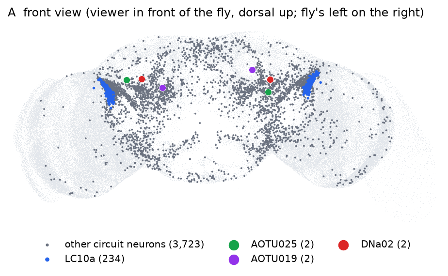
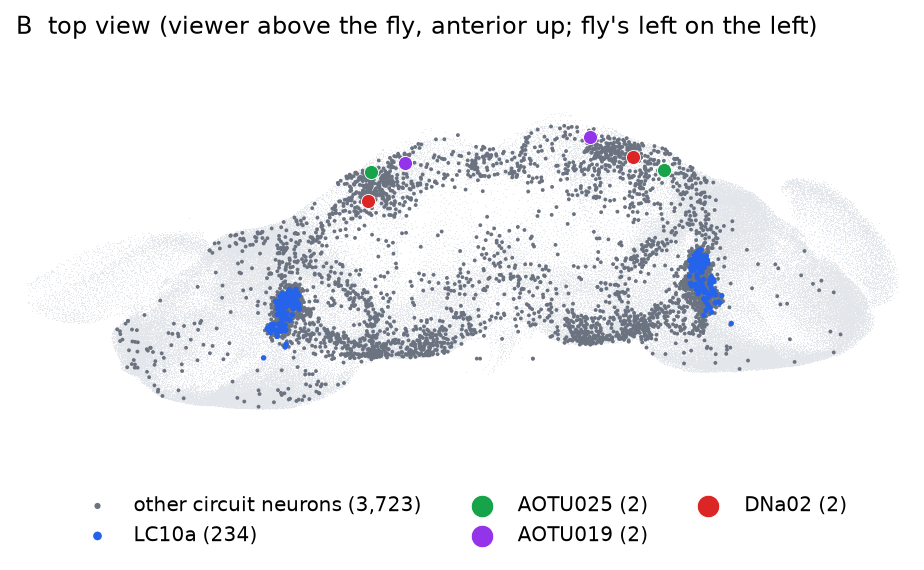

PART 1
一份連結體要變成一個會玩遊戲的模型，要再加三個人為的零件，一共四個；四個裡只有連結體來自資料
連結體（connectome）是一張清單：一顆腦裡每一顆神經元、它連到哪些神經元、每一條連結有幾個突觸（synapse：兩顆神經元之間傳訊號的接點；一條連結的突觸愈多，通常影響愈大）。它本身是靜態的，不會動。要讓它「玩遊戲」，fruitfly-lab（一個放在 GitHub 這個公開程式碼網站上的專案；本頁說的「作者」就是寫這個專案的人，「README」是作者附的說明檔）在連結體之外又加了三個零件，一共四個：
| 零件 | 它回答的問題 | 來自資料，還是人為設定 |
|---|---|---|
| ① 連結體 | 誰連到誰、連得多強 | 資料（電子顯微鏡重建：把整顆腦切成極薄的切片逐張拍照，再由電腦與人工沿著每顆神經元在相鄰切片間描出來、數出接點，得到「誰連到誰、幾個突觸」的清單） |
| ② 神經元方程式 | 一顆神經元收到輸入之後怎麼反應 | 人為設定（借用已發表的模型） |
| ③ 輸入編碼 | 遊戲畫面怎麼變成神經元的輸入 | 人為設定 |
| ④ 讀出規則 | 哪些神經元的活動、怎麼換成按鍵 | 人為設定 |
這一頁把四個零件逐一講完（第 2 到 4 節：第 2 節零件 ②、第 3 節零件 ①、第 4 節零件 ③ 與 ④），第 5 節講七個對照條件，最後收成一張總表（第 6 節）。
fruitfly-lab 的每一顆神經元都用漏電整合發放模型（leaky integrate-and-fire，簡稱 LIF）模擬，參數照抄 Shiu 等人 2024 年在 Nature 發表的果蠅全腦模型。這個模型只追蹤一個量：神經元的膜電位（細胞內外的電壓差，單位 mV）。膜電位夠高就「放電」一次，放電是神經元之間唯一的訊號。下面先列方程式，再用水桶比喻走一遍，接著是參數表，最後是可以自己操作的圖 1。
| 參數 | 值 | 意思 |
|---|---|---|
| Vrest | −52 mV | 靜止膜電位，也是放電後拉回的值 |
| Vth | −45 mV | 放電閾值 |
| τm | 20 ms | 膜時間常數：漏得多快 |
| τsyn | 5 ms | 突觸時間常數：上游一次放電把 g 推高之後，g 衰減得多快。「每過 5 ms 剩約 37%」是指數衰減的定義：時間常數 τ 的意思就是每過一個 τ，剩下的量變成原來的 1/e ≈ 37%，再過一個 τ 又乘 37%。它決定一次輸入能推膜電位多久，也決定幾個輸入要多靠近才疊得起來。為什麼是這樣衰減、5 ms 從哪來，見表下的附註 |
| 不反應期 | 2.2 ms | 放電後這段時間內不會再放電。順序是：放電那一刻 g 歸零 → 接下來 2.2 ms 兩條方程式暫停，V 停在 Vrest、g 不衰減，但期間到達的輸入照樣加進 g → 結束後兩式恢復，存起來的 g 才開始推 V 並衰減 |
| 每個突觸的權重 | 0.275 mV | 一條連結的強度 ＝ 突觸數 × 正負號 × 0.275 mV。0.275 mV 是 Shiu 等人為全腦模型挑的單一突觸強度，不是量出來的；正負號看上游那顆神經元的傳導物質（放電時釋放給下游的化學訊號）：乙醯膽鹼為正、GABA 與麩胺酸為負。傳導物質是 FlyWire（做出這份連結體的計畫，第 3 節細講）用電子顯微鏡影像以機器學習預測的，附在資料裡，所以算資料，但是預測值，不是逐顆實驗確認的 |
| 傳遞延遲 | 1.8 ms | 上游放電到下游收到的時間 |
| 模擬時間步長 | 0.1 ms | 電腦每 0.1 ms 更新一次所有神經元 |
這張表哪些是量出來的：只有「正負號」來自資料（FlyWire 的預測）。其餘每一個數值都是 Shiu 等人為全腦模型採用的同一組通用值，整顆腦 13 萬多顆神經元都用這一組，不是逐顆量出來的；真實神經元的這些性質各不相同。所以第 1 節把方程式整個歸在「人為設定」。
參數出自 fruitfly-lab 的 README 第 32–33 行（程式庫本身叫 repo，後面會一直用這個詞）（引用 Shiu et al. 2024, Nature）；程式在 flycircuit/lif.py。
生物上的意思。上游放電時，突觸釋放傳導物質，打開下游細胞膜上的受體通道，離子流進來，這股電流就是 g 代表的東西。傳導物質很快被清掉或脫離，打開的通道一個一個關上。假設每個打開的通道在每一瞬間都有同樣的機率關上、彼此不相干，那麼還開著的通道愈多，每毫秒關掉的就愈多：g 減少的速度和 g 本身成正比，寫成式子就是 dg/dt = −g ÷ τsyn，解出來就是「每過 τsyn 剩 37%」的指數衰減。實驗記錄到的突觸電流，大致也是很快升起、再接近指數地衰減下來。所以「指數衰減」這個形狀有生物依據。
簡化了什麼。一、上升是瞬間的，真實的突觸電流要零點幾到幾毫秒才升到頂。二、興奮、抑制、整顆腦所有突觸都用同一個 τsyn，真實的各種受體快慢差很多。三、g 直接用 mV 計，抑制的效果不隨當下的膜電位改變；真實的突觸電流大小會隨膜電位變（Jürgensen 等人的模型就有算這一點，見下面）。四、沒有連續放電之後變弱或變強這類突觸可塑性。這樣寫的好處是算得快：式子是線性的，上游所有輸入直接加進同一個 g、一起衰減，每顆神經元只要記一個 g，13 萬多顆神經元才跑得動。
5 ms 的出處。Shiu 等人論文的 Methods 寫「τ ＝ 5 ms（突觸衰減的時間尺度）」，引的是 Jürgensen 等人 2021 年的論文（Neuromorphic Computing and Engineering 1:024008），不是 Vrest、Vth、τm 引用的 Kakaria 與 de Bivort 2017。Jürgensen 等人做的是果蠅幼蟲的嗅覺迴路模型，參數表把興奮性突觸的時間常數設為 5 ms、抑制性的設為 10 ms，表上沒有附實驗出處。Shiu 等人只取了 5 ms，抑制也用 5 ms。
對照：Kakaria 與 de Bivort 2017。Vrest −52 mV、Vth −45 mV、τm 20 ms 出自這篇。他們說這組參數對應「一般的放電神經元」，並和果蠅的一些量測相符：Vrest 引 Rohrbough 與 Broadie 2002、Sheeba 等人 2008；Vth 引 Sheeba 等人 2008、Gouwens 與 Wilson 2009；τm ＝ 膜電阻 10 MΩ × 膜電容 0.002 μF ＝ 20 ms，電阻與電容引 Gouwens 與 Wilson 2009。這篇的突觸電流先花 2 ms 升起、再指數衰減，衰減的半衰期是 5 ms（引 Gaudry 等人 2013，這篇我們沒有再往下查）。半衰期是剩一半的時間，換成時間常數約 7.2 ms（5 ÷ ln 2），和 Shiu 等人的 5 ms 不是同一個數。
結論。突觸輸入照指數衰減，有生物依據，也是計算神經科學的標準簡化。5 ms 是從另一個果蠅模型借來的通用值，不是在 LC10a、AOTU019 這些神經元上量到的；它和膜電位那幾個參數一樣，整顆腦共用同一個值，所以第 1 節把整條方程式歸為人為設定。
讀的原文：Shiu et al. 2024, Nature 634:210–219（PMC11446845，Methods）與作者程式 Drosophila_brain_model/model.py 的參數註解；Jürgensen A-M, Khalili A, Chicca E, Indiveri G, Nawrot MP 2021, Neuromorph. Comput. Eng. 1:024008（開放全文，表 1）；Kakaria KS, de Bivort BL 2017, Front. Behav. Neurosci. 11:8（PMC5306390，Methods）。查證紀錄在 out/lif_sources.json。
下面圖 1 把方程式和水桶放在一起動：左邊是水桶，右邊是同一顆神經元的 g 與 V 隨時間怎麼變。七步各演一件事，每一步播完都可以自己按「＋1 興奮」「＋1 抑制」送輸入試試看。
flycircuit/lif.py 的 _kernel（每 0.1 ms 一步：收到期的輸入 → 不反應期外才積分與衰減 → 外部刺激 → 過刻度就放電）；參數讀作者 circuit/meta.json。步驟裡的數字由 scripts/lif_fig_data.py 用同一套規則在 Python 裡算出，在 out/lif_fig.json；圖由 scripts/make_lif_anim.py 產生（圖裡的文字要改在那裡）。FlyWire v783 是一隻雌果蠅全腦的連結體，有 138,639 顆神經元、15,091,983 條連結。fruitfly-lab 不模擬整顆腦，而是切出其中一段已經被研究清楚的視覺追蹤迴路：這段迴路在真果蠅裡的工作是看到小的移動物體就轉過去追，遊戲要做的也是轉向對準敵人，所以挑它。切出來的這一小塊叫子圖（subgraph），共 3,963 顆神經元。
迴路的起點是 LC10a：一群偵測「視野裡小而移動的物體」的視覺神經元，左半腦 115 顆（接收左眼的訊號）、右半腦 119 顆。終點是五種控制轉向的下行神經元（descending neuron：從腦往下送訊號到腹神經索、控制身體動作的神經元），五種是 DNa01、DNa02、DNa03、DNa04、DNa11，切子圖時五種都當終點，決定哪些神經元留在子圖裡。
第 4 節把放電換成按鍵時，五種裡只用 DNa02，再加上中間的 AOTU019（下面要講的兩種中間神經元之一，不是下行神經元）；為什麼不用另外四種，作者沒寫。README 的迴路圖也只畫從 LC10a 經 AOTU019、AOTU025 到 DNa02 這一條路。從 LC10a 到 DNa02 中間經過兩種神經元：
上面兩條是連結體資料：傳導物質是 FlyWire 預測的；投射到哪一側在連結體裡查得到，下面圖 2 的接線就是（AOTU019 的抑制連結接到對側的 DNa02、AOTU025 的興奮連結接到同側的），README 也這樣寫。連結體本身不會直接告訴你一顆神經元負責視野的哪一塊。本頁後面會一直說 AOTU019 負責中央視野、AOTU025 負責外圍視野：這個分工的方向有一篇研究的連結體分析與電生理實測支持（Collie 等人 2026，Neuron，見下面附註），但那篇研究量到兩者的視野相當重疊，不是一刀切。README 第 21、22 行把它寫成 AOTU019 是 central field 0–40°、AOTU025 是 periphery 40–90°（離正前方的偏角，左右皆然，和第 4 節的方位角同一把尺），這兩個角度是作者的概括，論文裡沒有這個分界。作者再把這個分工拿來設定第 4 節的輸入編碼，做法也和論文不同（見附註），所以在這個模型裡它是人為設定。
出處。Collie MF, Jin C, Rockwell V, Kellogg E, Vanderbeck QX, Hartman AK, Holtz SL, Wilson RI. Specialized parallel pathways for adaptive control of visual object pursuit. Neuron 114(10):1833–1847.e9 (2026). doi:10.1016/j.neuron.2026.01.001（PubMed 41713413；預印本 bioRxiv）。本課讀的是 bioRxiv 的第一版（2025 年 4 月）與修訂版（2025 年 11 月）全文；Neuron 正式版的網頁本課抓不到，卷期頁碼由 Europe PMC 的書目資料核對。
依據一：連結體。LC10a 把視野依序排在視葉的小葉（lobula）上，投射到 AOTU 時保留這個順序。論文發現 AOTU019 主要收負責內側（前方）視野的 LC10a，AOTU025 主要收負責側方視野的；再用每種 AOTU 收到的 LC10a 輸入在小葉內外軸上的分布，推估它的視野範圍（推估時納入 15° 的雙眼重疊）。用了兩份連結體：雌蠅的 FlyWire 與雄蠅的 MaleCNS。
依據二：電生理。對頭部固定、在球上走路的果蠅做全細胞記錄（把電極接上單顆神經元、直接量它的放電），在環繞的螢幕上讓小物體出現在隨機位置、以每秒 25° 橫移 22.5° 後消失，逐點量反應。雄蠅記了 AOTU019 25 顆、AOTU025 22 顆，雌蠅各 9 顆；記錄時用光遺傳學讓果蠅處於激發狀態（雄蠅刺激 P1 神經元、雌蠅刺激 aIPg），確保 AOTU 對視覺有反應。結果：AOTU019 對正前方附近的物體反應最強，AOTU025 對外圍的最強，雌雄一樣；兩者的視野相當重疊，物體從外圍移到中央時兩者會同時活化、平順交接（論文圖 4 的標題就是「平行的 AOTU 路徑編碼部分重疊的視野區域」）。
和 fruitfly-lab 的差別。① 0–40°、40–90° 這兩個角度不在論文裡，是 README 的概括。② 論文用每顆 LC10a 在小葉上的位置推估視野；fruitfly-lab 改用每顆 LC10a 接到 AOTU019 與 AOTU025 的突觸占比當偏好位置（第 4 節第 2 步），沒有用到位置，兩種做法不一樣。③ 論文推估視野時用 15° 的雙眼重疊；fruitfly-lab 的雙眼重疊區是正前方 ±6°（BINO），作者沒寫這個數字的出處。
AOTU019 與 AOTU025 在這個模型裡各管什麼、為什麼下面圖 2 裡 AOTU019 到對側 DNa02 的那條虛線（抑制）在這個模型裡沒作用，要等第 4 節講完讀出規則才答得了，答案在第 4 節末尾的五點。
out/demo_data.json 的 circuit.edges 而來（從作者的 circuit/edges.bin 加總）。切法分兩步。第一步挑神經元：只沿著突觸數 5 個以上的連結走，從 LC10a 往下游走最多 2 步、從那五種下行神經元往上游走最多 2 步，兩邊都走得到的神經元留下來，再加上起點與終點。第二步接線：留下來的神經元之間，連結體裡有的連結不論強弱全部保留，4 個突觸、1 個突觸的也留。所以「5 個以上」只用來決定誰留下，不用來刪連結。結果是 3,963 顆神經元、354,879 條連結，其中 38% 是抑制性連結（上游放電會把下游的 g 往負的方向推，見第 2 節；這個比例說的是「抑制」在這段迴路裡不是少數，上面的 AOTU019 就是其中之一）。5 與 2 這兩個數是作者挑的，README 沒有說明理由。子圖裡的接線全部是量出來的，沒有一條是人加的。
切出來的 3,963 顆在腦裡分佈在哪，見圖 3。


圖 3 切出來的 3,963 顆神經元，細胞體在腦裡的位置。要帶走的一件事：子圖不是一塊，而是散在中央腦（兩個視葉中間那一塊）和視葉（眼睛後面處理視覺的腦區，圖上兩側的大圓）內側的三千多顆，圖 2 只畫了其中 8 群。細胞體是神經元的本體，纖維從這裡長出去伸進腦內，和別的神經元接線都在纖維上。極淡灰是全腦的輪廓：FlyWire 標註表（FlyWire 附的一張表，每顆神經元一列，有細胞體座標、左右側、細胞種類等欄位）裡有細胞體座標的 118,104 顆，果蠅的細胞體都排在腦的表面，點一多，輪廓就自己浮出來。深灰是切出來的 3,963 顆。四種上色：LC10a 234 顆（左 115、右 119）擠在視葉與中央腦交界的上側，左右各一團；AOTU019、AOTU025、DNa02 左右各一顆，都在腦的前方。這張圖只畫細胞體，不畫神經元的形狀，所以看不出誰連到誰，連到哪裡要看圖 2。
由 scripts/make_soma_fig.py 從 FlyWire 的標註表（作者 repo 裡的 data/flywire_annotations_783.tsv）與作者的 circuit/meta.json 畫出。底圖只有 118,104 點，是因為兩萬多顆神經元的細胞體在腦外、表裡沒有座標；標註表沒標哪邊是前、哪邊是上，方向是用兩群位置已知的神經元算出來的。細節在下面的附註，數字在 out/soma_fig.json。
對帳：標註表 139,248 列，模型用的是 138,639 顆，淨差 609 ＝ 標註表多的 623 列（多半是感覺神經元，模型沒收）− 模型多的 14 顆（不在標註表裡）。139,248 列裡 21,144 列沒有細胞體座標，多半是感覺神經元（16,897 列），細胞體在腦外的觸角、口器、身體上，所以底圖只有 118,104 點。3,963 顆裡有 5 顆沒有細胞體座標，作者的 meta.json 改用標註表另一欄的代表點（神經元上的某一點），圖上照畫。
方向：點一多，輪廓看得出形狀，但腦的形狀左右對稱、前後上下也分不出來；標註表裡每顆細胞體只有 x、y、z 三個數。所以拿兩群已知一上一下的神經元（Kenyon 細胞是細胞體在腦背側的一群、下行神經元的細胞體偏腹側，這是解剖文獻早就知道的），各算細胞體的平均位置，兩個平均點的連線方向就是上下；前後同理（觸角葉投射神經元的細胞體在腦前方、Kenyon 細胞與視葉最後方的 T4/T5 在後）；左右直接用標註表的 side 欄。
下表只列程式實際用到的四種：在哪裡加輸入、從哪裡讀輸出、損毀實驗動哪幾顆。「作用」指的是在這個模型裡程式怎麼用它，不是它在真果蠅裡做什麼。傳導物質是 FlyWire 的預測（第 2 節）。
| 種類 | 顆數 | 傳導物質 | 在模型裡的作用 |
|---|---|---|---|
| LC10a（視覺投射神經元） | 234（左 115、右 119） | 乙醯膽鹼 232、麩胺酸 2 | 迴路的起點，也是唯一接收輸入的地方：第 4 節把敵人方位換成它們的隨機放電。切子圖時從它往下游走 |
| AOTU019 | 2（左右各 1） | GABA（抑制） | 收同側 LC10a，抑制對側 DNa02。被讀出：轉向公式的一項（左右差），兩側都亮就開火。作者設定它負責中央視野；lesion 損毀它 |
| AOTU025 | 2（左右各 1） | 乙醯膽鹼（興奮） | 收同側 LC10a，興奮同側 DNa02。不直接讀，影響經由 DNa02 表現。作者設定它負責外圍視野；lesion、lesion025 損毀它 |
| DNa02（下行神經元） | 2（左右各 1） | 乙醯膽鹼 | 切子圖的終點之一。被讀出：轉向公式的另一項（左右差） |
這四種就是圖 2 的 8 群、240 顆。子圖其餘 3,723 顆沒有人為指定的角色：不加輸入、不讀輸出、不損毀，模擬時照算，它們做什麼完全由接線決定。
顆數與傳導物質由 scripts/subgraph_types.py 從作者的 circuit/meta.json 數出，數字在 out/subgraph_types.json；「作用」一欄出自 doom/fly_doom.py（刺激 LC10a、讀出公式、make_policy() 的損毀名單）。
遊戲是 ViZDoom（把經典射擊遊戲 Doom 包成研究用環境的套件）的 defend_the_center 關卡：玩家站在圓形場地中央，只能左轉、右轉、開火，敵人從四周走過來。遊戲每秒更新 35 次，每一次叫一格（tic），一格是 1/35 秒 ≈ 28.6 ms。遊戲每前進一格，模型就把大腦也往前推 28.6 ms，也就是 286 個 0.1 ms 的步長，讓遊戲裡的 1 秒等於大腦裡的 1 秒；這 286 步裡每顆神經元放電幾次，除以 28.6 ms，就是這一格的放電率，拿去決定按哪個鍵。
模型沒有看遊戲畫面的像素。ViZDoom 會直接回報畫面上每個物體的位置，程式從中換算出 LC10a 的刺激，分四步：
fly_doom.py 的 FLY_SCALE = 2.0，作者的設定）。敵人在右邊就刺激右眼的 LC10a，在左邊就刺激左眼的；正前方 ±6° 以內兩側同時受刺激（這一塊叫雙眼重疊區；±6° 是作者定的常數，fly_doom.py 的 BINO = 6.0，人為設定）。fly_doom.py 的 pref_ecc）；敵人的方位取絕對值（左右已在第 1 步分開）再除以 90°，也變成 0 到 1。接著看這兩個數差多少：差 ＝ |偏好位置 − 敵人方位|，代進一條鐘形曲線得到「接近程度」＝ e−差² ÷ (2 × 0.3²)（0.3 是作者定的調諧寬度，fly_doom.py 的 SIGMA = 0.3，人為設定）。差 0 時接近程度是 1（滿格），差 0.3 剩 61%，差 0.5 剩 25%，差 0.9 只剩約 1%。舉例：敵人在右方 45°，換成 0.5；右眼偏好位置 0.5 的 LC10a 差 0，拿滿格；偏好 0.2 或 0.8 的差 0.3，拿 61%；偏好 0（正前方）或 1（最外圍）的差 0.5，只拿 25%。下面圖 4 的第 ④ 步畫的就是這條曲線。換成角度說，就是占比 1 當作偏好 0°、占比 0 當作偏好 90°。有 49 顆 LC10a（左 25、右 24）跟同側的 AOTU019、AOTU025 一條連結都沒有，算不出占比，程式一律給它們偏好位置 0.5（正前方與最外圍的中間），這是程式的預設值，不是資料。偏好位置和敵人方位接近的那幾顆刺激最強，離得遠的幾乎不刺激。這是用接線「代替」真正的視野位置（真實果蠅每顆 LC10a 看哪一塊視野，要由複眼的光學量測決定，資料裡沒有），README 把它標為人為設定。Drosophila_brain_model 的 model.py）的預設值，程式註解說 250 倍「足以引發放電」，論文本身沒有說明這兩個數怎麼來。論文只寫「用 Poisson 分布的輸入刺激特定神經元」，實際的刺激頻率依實驗調整（例如糖味受器 10–200 Hz、水味受器 20–260 Hz），並說模型的絕對放電率不一定準，該看的是不同條件之間的相對差異（Shiu et al. 2024, Nature 634:210–219，Methods）。所以在這個模型裡它們是人為設定：選 250 倍的目的只是讓「抽中一次」等於「放電一次」，刺激頻率就能直接當成放電率來讀。畫面上同時有好幾個敵人時，每個敵人各自走完前三步，落在同一顆 LC10a 上的放電率加起來，加到 150 次就不再加。所以同一個畫面，每次跑出來的 LC10a 放電時刻都不同，這就是 PART 3 第 1 節判定標準裡「模型有隨機雜訊」的來源。doom/fly_doom.py 的 enemies() 與 FlyBrain.stim_rates()；常數與 234 顆的偏好位置由 scripts/encode_fig_data.py 從作者原始碼與 circuit/meta.json 抓出，在 out/encode_fig.json；圖由 scripts/make_encode_anim.py 產生（圖裡的文字要改在那裡）。簡報要演示的話：圖 4 單獨頁只有這張圖，版面配合 16:9 投影片，功能和上面一樣，可以用 PowerPoint 的網頁增益集嵌進投影片（要能上網），也可以下載後用瀏覽器直接開（單一檔案，不用網路）；鍵盤 ← → 換步驟、W 讓敵人走動、T 加第二個敵人、D 顯示這一步的說明。不想用瀏覽器的話，投影片用圖有九個畫面（六步，加上兩眼都刺激、敵人遠與近、兩個敵人疊加），每個都有 PNG 與 SVG，一張投影片放一個畫面即可；壓縮檔裡也附了單獨頁。
scripts/lc10a_cross.py 數過），所以它只反映自己那一眼看到的東西；第 3 節說的「投射到對側」是指它把訊號送去對側的 DNa02，收和送是兩回事。因此所以只有敵人落在 ±6° 的雙眼重疊區、兩眼都受刺激時，兩側 AOTU019 才會一起亮（數字見下面「門檻怎麼定」）；「兩側都亮」就被當成「對準了」。轉向和開火各自判斷、互不排斥，同一格可以同時按轉向鍵和開火鍵。畫面上有敵人但轉向、開火都沒過門檻時，這一格什麼鍵都不按；畫面上沒有敵人、而且整個迴路也安靜時（安靜：LC10a、AOTU019、AOTU025、DNa02 左右共八群的放電率加總低於 5 Hz，作者定的門檻），固定按右轉，讓視野轉起來找敵人；沒有敵人但迴路還有活動（例如敵人剛消失）時，照公式判斷。為什麼公式裡有 AOTU019、沒有 AOTU025：作者在 README 寫，敵人在正前方附近時，子圖裡的 DNa02 完全不放電，只讀 DNa02 會讀不到中央視野的訊號，所以把負責中央視野的 AOTU019 左右差也加進去；AOTU025 負責外圍，而且只連到同側 DNa02，它的訊號已經反映在 DNa02 的左右差裡。這條公式是人為設定，PART 4 第 4 節會檢查它的後果。
門檻怎麼定。兩條門檻叫閾值。轉向訊號的大小由迴路決定，事先不知道「多大算敵人在右邊」，所以要先量一次，這一步叫校準。怎麼量：沒有遊戲畫面，程式直接給一個方位角，跳過第 1 步「畫面換算成方位角」那一半，從「分左右眼」往下照第 1 到 4 步做，把一個假想敵人依序放在 −90° 到 +90° 共 17 個方位（中央密、外圍疏：0、±5、±10、±20、±30、±45、±60、±75、±90°），每個方位先讓迴路跑 10 格暖機、再跑 20 格（每格 28.6 ms，共約半秒），記錄這 20 格平均的 LC10a、AOTU019、AOTU025、DNa02 放電率與轉向訊號。量出來的表叫校準表（PART 3 第 6 節）。
量到什麼：敵人在 0° 時左 AOTU019 是 219.94 Hz、右 191.35 Hz，在 +10° 時左側只剩 17 Hz、右側 250.04 Hz，這就是上面白話說的「只有正前方兩側才一起亮」；轉向訊號 0° 時是 −28.59（＝ 191.35 − 219.94，因為兩側 DNa02 都是 0），+10° 時 233.27（＝ 250.04 − 16.77，17 是四捨五入），−10° 時 −238.8。這幾個數就是下面定閾值用的材料。
校準裡沒查的四件事：
量完後用兩條固定的規則算出閾值：
兩個閾值都不低於 1.0：這個下限是作者程式裡寫死的（fly_doom.py），沒有註解說明理由，算人為設定；本課猜是避免訊號接近零時閾值變成 0（例如打亂接線之後），這是猜的。完整接線用上面校準表的數字算出來：開火 ＝ 191.35 ÷ 2 ＝ 95.68；轉向 ＝ (28.59 ＋ 233.27) ÷ 2 ＝ 130.93（±10° 兩邊取絕對值較小者：−10° 是 238.8，比 +10° 的 233.27 大，所以用 233.27），單位都是 Hz（放電率，轉向訊號是四個放電率加減出來的，所以也是 Hz）。你可能會問：下游怎麼會比單顆 LC10a 的上限還快？校準表裡敵人在 +10° 時右 AOTU019 約 250 Hz、左 17 Hz，而一顆 LC10a 最多 150 Hz；因為同側有一百多顆 LC10a 一起餵同一顆 AOTU019，下游放電率高過單顆 LC10a 不奇怪。
放電率大概落在哪裡。校準表 17 個方位、每個方位 20 格平均，各群的範圍如下（每一群都是左右兩側分開量；最低都是 0，因為敵人不在那一側時，那一側完全不放電）：
| 神經元 | 放電率範圍（Hz） | 說明 |
|---|---|---|
| 給每顆 LC10a 的刺激 | 0–150 | 輸入編碼設的上限（第 4 步） |
| LC10a（整群平均） | 0–85.6（左最高 84.6、右最高 85.6） | 只有偏好位置接近敵人的那些拿到接近 150，其他的低，平均下來就低 |
| AOTU019 | 0–250.04（左最高 238.8） | 一百多顆 LC10a 一起餵一顆，所以比單顆 LC10a 快 |
| AOTU025 | 0–229.1（右最高 187.3） | 敵人在 ±10° 以內兩側都是 0 |
| DNa02 | 0–207.9（右最高 173.12） | 敵人在 ±30° 以內幾乎是 0 |
理論上限約 455 Hz：放電後有 2.2 ms 不反應期（第 2 節），1 秒最多擠得下 1000 ÷ 2.2 ≈ 455 次；實際最高約 250 Hz，沒有碰到上限。另外，「每 0.1 ms 抽一次」的機率換算（機率 ＝ 放電率 × 0.1 ms ＝ 放電率 ÷ 10,000，150 Hz 就是每步 1.5%）只用在外加給 LC10a 的刺激；AOTU019、AOTU025、DNa02 與子圖其餘的神經元都不抽籤，膜電位照第 2 節的方程式算、超過閾值才放電，沒有隨機成分（它們的放電時刻每次不同，是因為上游的 LC10a 不同）。
校準只做一次，之後玩遊戲時迴路的接線、參數、閾值都不會改變——整個過程沒有任何訓練或學習。
輸入編碼與讀出規則出自 fruitfly-lab 的 doom/fly_doom.py 與 README 第 35、40–43 行；閾值在 out/fruitfly/local_doom_vizdoom130/calibration_fly.json（17 個方位的 rows 與 cal）。
回到第 3 節留下的問題：AOTU019 與 AOTU025 各做什麼。分五點，每點先結論再理由。
出處：校準表在 PART 3 第 6 節，校準曲線圖與「量不到」的後果在 PART 4 第 4 節；PART 5 的影片裡正前方 ±30° 內 DNa02 都是 0。
只看「完整迴路每局打死幾隻」說明不了什麼——也許隨便一個網路接上同樣的輸入與讀出也打得到。所以作者準備了七個條件，每個條件玩 10 局（episode：從開始到玩家死亡為一局），用同一組亂數種子（seed：讓隨機過程每次都產生同一串隨機數的起始值）。這裡有兩種隨機：遊戲抽敵人的位置與順序，以及 LC10a 的放電（第 4 節）。兩種都由種子固定。遊戲只用一個種子 0 連跑 10 局（種子只定起點，10 局連著往下抽同一串隨機數、中間不重設），所以 10 局的敵人各不相同；LC10a 的放電每局一個種子，共 10 個；七個條件共用這同一套，換一個條件重跑，兩串隨機數一模一樣，七個條件面對的是同樣的 10 局敵人，不是同一局重播 10 次。
| 條件代號 | 大腦是什麼 | 它回答的問題 |
|---|---|---|
fly | 完整接線 | 主角 |
scrambled | 把所有連結的終點重新洗牌，洗牌方式保證每顆神經元連入、連出的條數不變（做法叫「度保持打亂」，見表下）；閾值沿用完整迴路。LC10a、AOTU019、DNa02 還是原來那幾顆，刺激與讀出位置不變，只是它們之間的路被重接 | 接線的「誰連到誰」重不重要 |
scrambled_cal | 打亂接線，用打亂後的迴路自己校準閾值 | 同上，但排除「閾值不適合」這個解釋 |
lesion | 損毀（讓這幾顆整場都不放電，見表下）左右 AOTU019 與 AOTU025；閾值沿用完整迴路 | 整條中央與外圍的路都斷掉會怎樣。注意開火規則讀的就是 AOTU019，損毀它開火永遠不成立，所以這個條件註定 0 分，分不出細部貢獻；作者 README 第 77 行也這樣說，比較能說明事情的是下一列 |
lesion025 | 只損毀左右 AOTU025；閾值沿用完整迴路 | 外圍視野那條路的貢獻 |
random | 不用大腦，每格隨機按鍵 | 亂按能拿幾分的基準；有大腦的條件也可能比亂按低，怎麼解讀見 PART 3 |
oracle | 不用大腦，直接照敵人方位轉向、對準就開火 | 這套按鍵規則能拿到的最高分 |
scrambled、scrambled_cal、lesion、lesion025 這四個對照動的都是零件①（把接線打亂，或讓其中幾顆神經元不放電），其他零件不變；scrambled_cal 另外為打亂後的接線重算零件④的閾值。random 與 oracle 不用大腦，只拿來當兩個基準：亂按能拿幾分（有大腦的條件可以比它低）、和看得到一切的上限。上表最後一欄寫的就是它回答什麼。七個條件各 10 局的平均擊殺：fly 10.2、lesion025 5.5、lesion 0、scrambled 0、scrambled_cal 0.7、random 0.9、oracle 11.5。這裡只先認識七個條件是什麼；這些數字怎麼解讀（例如打亂接線為什麼和亂按差不多、完整接線離上限多遠）在 PART 3 第 7 節與 PART 4。
打亂接線的做法是：每顆神經元送出幾條連結、收到幾條連結、正負號都保持不變，只把「連到誰」隨機重排（這種打亂叫度保持打亂，「度」就是一顆神經元的連結數）。打亂只換連結的終點，每顆 LC10a 的偏好位置沿用完整接線算出的占比，不重算。損毀是讓指定的神經元在整場模擬裡都不放電。
七個條件的定義出自 fruitfly-lab doom/fly_doom.py 的檔頭說明與 make_policy()。
| 零件 | fruitfly-lab | 來自哪裡 |
|---|---|---|
| ① 連結體 | FlyWire v783 的子圖，3,963 顆、354,879 條連結 | 資料（切哪一段、「突觸數 5 個以上」「走最多 2 步」這兩個數是作者挑的；留下來的每一條接線都是量的，第 3 節） |
| ② 神經元方程式 | LIF，參數借自 Shiu 等人 2024 | 人為設定（借用已發表的模型） |
| ③ 輸入編碼 | 遊戲回報的敵人方位 → LC10a 隨機放電 | 人為設定 |
| ④ 讀出規則 | 固定公式、校準一次的兩個閾值 | 人為設定 |
| 有沒有學習 | 沒有：沒有任何參數被訓練，閾值校準一次就固定 | — |
表中數字的出處同第 2、3 節。
作者在 README 裡列了同樣意思的清單，也寫明他的模型不是把一隻真果蠅的腦整個搬進電腦（README 第 76 行的原話是 This is not an "uploaded fly"），四個零件裡三個是人為的。上面這張〈總表〉是PART 3 到 PART 5 的地圖：PART 3 檢查的是「照這四個零件組起來，能不能得到作者的數字」；PART 4 則開始動零件 ④——換一種讀法，看結論還站不站得住；PART 5 在影片上逐格看這四個零件怎麼接在一起運作。